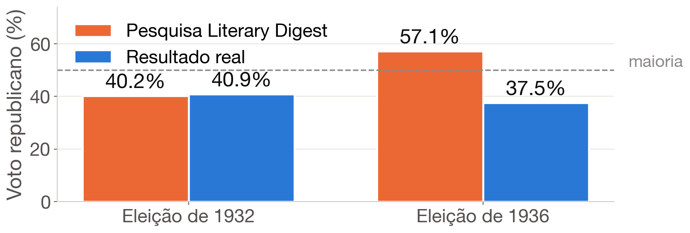
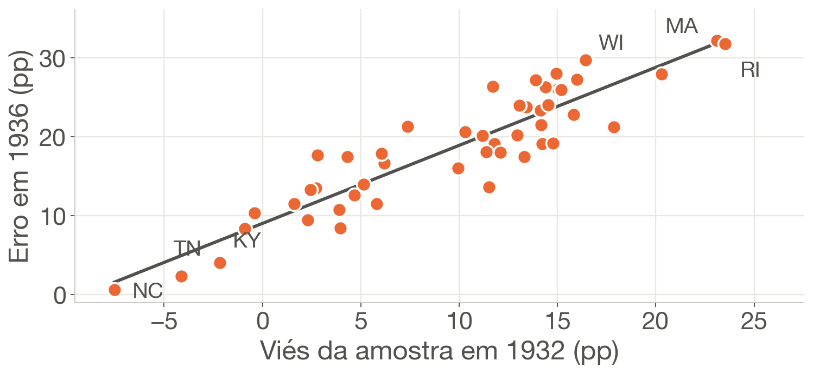
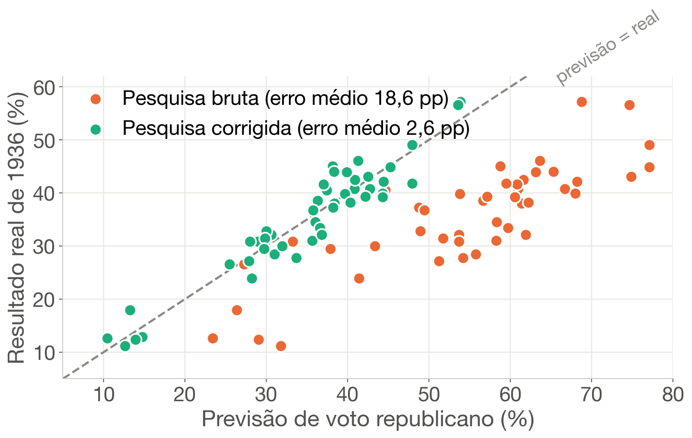

1. O caso de 1936
A revista The Literary Digest enviou 10 milhões de cartões e recebeu 2,4 milhões de respostas. Previu a vitória de Landon, mas Roosevelt venceu com 62% dos votos e a revista faliu. Nosso papel: cientistas de dados forenses.
A pesquisa deu 370 votos eleitorais a Landon; ele obteve 8. Errou o vencedor em 30 de 48 estados e superestimou Landon em 48 de 48.
2. Dados e método
Limpeza (Pandas). 48 estados, 4 blocos unidos pelo nome do estado, traços tratados e totais conferidos.
Exploração (NumPy). Voto republicano entre os dois partidos; erro = pesquisa − real.
Diagnóstico de viés. O “voto em 1932” dos respondentes contra o resultado real de 1932.
Modelo (Scikit-Learn). Regressão linear simples: erro de 1936 = a + b · viés de 1932. Validação leave-one-out.
3. Diagnóstico de viés

Em 1932 a pesquisa acertou (erro de 0,7 pp). Em 1936, errou por 19,6 pp.

Cada ponto é um estado: quanto mais republicana a amostra em 1932, maior o erro em 1936 (r = 0,91).
Não-resposta: só 23,8% dos cartões voltaram; os outros 76% teriam de ser 25,7 pp menos republicanos que quem respondeu (cenário hipotético).
4. Correção com âncora em 1932

Cada ponto é um estado. Modelo: erro de 1936 = 9,0 pp + 0,99 × viés de 1932; previsão corrigida = pesquisa − erro previsto.
| Abordagem | Erro médio (pp) | Estados certos | Votos Landon | Landon no país |
|---|---|---|---|---|
| Pesquisa bruta | 18,6 | 18/48 | 370 | 56,9% |
| Correção ingênua (1932) | 17,1 | 18/48 | 338 | 56,9% |
| Regressão com âncora | 2,6 | 48/48 | 8 | 38,4% |
| Só o real de 1932 | 3,5 | 48/48 | 8 | 38,3% |
| Resultado real | – | – | 8 | 37,5% |
Regressão e referência: previsões estado a estado por validação leave-one-out.